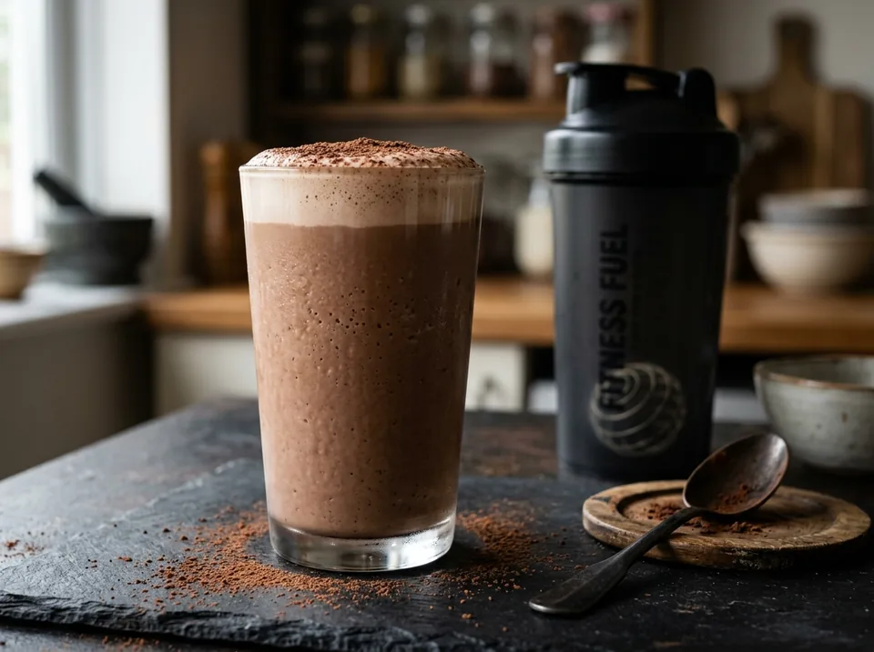

Напитки · 2 минуты
Шоколадный протеиновый био-шейк
Густой, кремовый шоколадный шейк на 1% кефире с чистым сывороточным протеином и классическим какао «Золотой Ярлык». Без сахара, с легкой сливочной кислинкой и бархатистой пенкой. Готовится в шейкере за 2 минуты!
К ингредиентам
Ингредиенты · 1 порций
- Кефир 1% («Ирбитский» или легкий биокефир) — 250 г
- Сывороточный протеин КСБ (без добавок) — 30 г (1 мерный скуп)
- Какао-порошок («Золотой Ярлык») — 7 г (десертная ложка)
- Подсластитель (ФитПарад №7/№10) — 2–3 стика (по вкусу)
- Ванилин (по желанию) — щепотка
Пищевая ценность
На 100 г: 82.6 ккал · Б 11.6 г · Ж 1.7 г · У 4.4 г
Шаг за шагом
Жидкая основа — первой
Налейте на дно чистого сухого шейкера ровно 250 г охлажденного 1% кефира. Заливать жидкость первой обязательно: если насыпать сухие порошки на сухое дно, они прилипнут к пластику и останутся неразмешанными.
Закладка сухих ингредиентов
Поверх кефира засыпьте 30 г сывороточного протеина без добавок, ровно 7 г какао «Золотой Ярлык» и 2–3 стика сахарозаменителя. По желанию добавьте щепотку ванилина для аромата домашней выпечки.
Взбивание в шейкере (30–45 сек)
Обязательно установите в шейкер сетку-рассекатель или опустите металлический пружинный шарик. Плотно закрутите крышку и защелкните питьевой клапан. Энергично взбалтывайте 30–45 секунд: сначала вертикальными амплитудными движениями, затем круговыми.
Оседание пены и подача
Дайте шейкеру спокойно постоять 1–2 минуты. При взбивании сывороточный протеин образует объемную воздушную пенку — за минуту она осядет в плотную бархатистую сливочно-шоколадную шапку. Пейте сразу из шейкера или перелейте в охлажденный бокал!